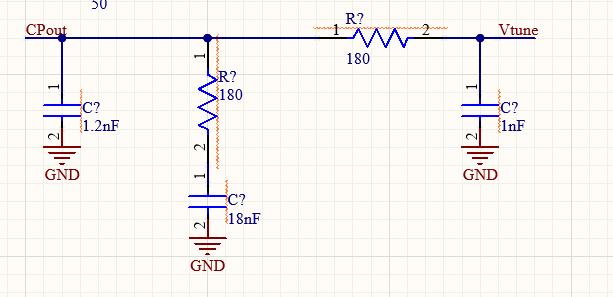

Overview
A phased array steers its beam by controlling the relative phase of the signal driving each radiating element, rather than by physically rotating a dish. Feed the elements in phase and the beam points straight ahead at boresight; apply a progressive phase shift across the array and the beam tilts — instantly, electronically, and with nothing moving.
This project is a complete small X-band RADAR front end. An RF transverter chain generates a clean 10.5 GHz carrier from a 7.5 GHz local oscillator mixed with a 3 GHz IF, filters and amplifies it, and routes it through a transmit/receive switch into the antenna array. The array itself is sixteen microstrip patches driven through four beamformer ICs, which apply the per-element phase shifts that do the steering.
Design Variables
Every number on this board traces back to a handful of decisions made up front. These are the ones that mattered most, and the reasoning behind each.
| Design choice | Value | Why |
|---|---|---|
| Operating frequency f0 | 10.5 GHz | X-band is the practical sweet spot for ground SAR, maritime and weather sensing. Small enough antennas to be portable, but long enough wavelength to behave well in weather. |
| Array dimensions | 4 × 4 | One beamformer IC drives four elements, so 3×3 or 5×5 would waste channels. A square grid steers evenly in both azimuth and elevation, and 16 elements give strong gain and directivity without narrowing the beam so far it becomes hard to use. It is also more affordable to fabricate. |
| Patch dimensions | L = 0.85 cm W = 1.13 cm |
Solved from the standard microstrip patch equations for f0 = 10.5 GHz on a substrate with εR = 3.48 and thickness h = 0.1575 cm (62 mil). |
| Element spacing | dx = dy = 1.428 cm | Spacing must stay at or below λ/2 to avoid grating lobes when steering out to the full ±90°. At 10.5 GHz, λ = 2.86 cm, so half a wavelength is 1.428 cm. |
| Feed method | Coax feed pins | Low loss, well shielded, and modular — the array can be integrated onto the PCB or driven standalone. Holds a 50 Ω impedance over a wide bandwidth. |
| Beamsteering parameters | Theta_Scan, Phi_Scan, ΔΦx, ΔΦy |
Theta_Scan and Phi_Scan set the desired beam direction; ΔΦx and ΔΦy are the per-element phase shifts needed to actually point it there. |
Sizing the patches
Patch width and length come straight out of the transmission-line model. Width is set from the target frequency and substrate permittivity; that width then determines the effective permittivity εeff the wave actually sees, which feeds back into the length calculation along with a fringing-field correction.

Choosing element spacing
Grating lobes are the failure mode that limits how far a phased array can steer. Space the elements too far apart and the array radiates duplicate beams in unwanted directions. The criterion below sets the maximum spacing for a given maximum scan angle — designing for θmax = 90° drives spacing to λ/2.

Estimating directivity
Before running a single full-wave simulation, this closed-form approximation gives a target to check the results against: directivity scales with the physical aperture of the array measured in wavelengths.

Steering the beam
The phase shift applied to each element is a function of where you want the beam to point and how far apart the elements are. These are the expressions programmed into the beamformer ICs.

Simulation Results
The full array was simulated in ANSYS Electronics Desktop with all sixteen coaxial ports excited. The results below cover impedance match, radiation pattern, element-to-element coupling, and how all of that degrades as the beam steers away from boresight.
Return loss — is the antenna actually accepting power?
S11 measures how much power injected into a port reflects straight back out. Lower is better: a deep dip means the element is well matched and radiating rather than reflecting.

Radiation pattern at boresight

Radiation pattern with the beam steered

Crosstalk between elements
Neighbouring patches couple to each other through their fringing fields. Too much coupling distorts the pattern and wastes transmit power heating adjacent ports instead of radiating.

How far can the beam actually steer?
The meaningful limit is where gain falls 3 dB below its boresight peak. RealizedGainTotal is the number to trust here, since it accounts for coupling and the S11 reflections that grow as the match degrades off-axis.

System efficiency across the scan
System efficiency is radiated power over accepted power – how much of what goes in actually leaves the antenna rather than being lost to reflection and coupling.


Full beamsteering demonstration
Sweeping the phase increments continuously sweeps the main lobe through space. Nothing physically moves.

RF Front End
The array is fed by a transverter chain that builds the 10.5 GHz carrier, cleans it up, and amplifies it to a usable transmit level. Each stage below was selected and specified as part of the RF PCB design.
| Stage | Part | Function | Gain / Loss |
|---|---|---|---|
| Local oscillator | LMX2592RHATPLL / frequency synthesizer |
Generates a 7.5 GHz tone for mixing with the 3 GHz IF. Runs on 3.3 V, covers 20 MHz–9.8 GHz with 32-bit fractional division, and delivers 49 fs RMS jitter with −134.5 dBc/Hz VCO phase noise at 1 MHz offset. | −8.5 dB |
| Reference clock | SIT5358AI-FR-33E0TCXO |
Supplies a stable temperature-compensated 10 MHz reference to the LO, so the synthesized carrier does not drift with board temperature. | — |
| Mixer | LTC5548IUDBdouble-balanced passive mixer |
Mixes the 7.5 GHz LO against the 3 GHz IF to produce the 10.5 GHz output. Microwave double-balanced topology for good port-to-port isolation. | — |
| Bandpass filter | ADMV8416tunable BPF (MMIC) |
Strips the mixer’s unwanted products and leaves only the 10.5 GHz signal. 5 V part with a selectable band, so the passband can be tuned rather than fixed at layout time. | −8 dB |
| Power amplifier | HMC451LC3GaAs PHEMT |
Recovers all the conversion and filter loss — the signal is net negative up to this point — and drives the array at a usable transmit level. | +19 dB |
| T/R switch | ADRF5019BCPZN |
Switches the shared antenna array between the transmit and receive chains. | −1.25 dB |
| Distribution | 1→4 splitter / combiner | Fans the single RF path out to the four beamformer ICs, which in turn each drive four antenna elements. | — |
Cleaning up the local oscillator
A synthesizer is only as clean as its supply and its loop filter. The LO’s regulator is bypassed with a three-capacitor bank chosen to cover different noise bands. 0.1 µF for 20–50 MHz harmonics, 1 µF for 10–20 MHz, and 10 µF for everything below 10 MHz. Digital blocks inside the part switch fast and draw current in spikes; without that filtering the spikes ride on the internal LDO rail, the DC bias on the VCO gets noisy, and the phase noise of the whole chain suffers.
The charge pump needs the same treatment on its output. Its job is to turn switching pulses into a clean DC tuning voltage for the VCO, and the loop filter below is what makes that happen.

PCB Integration
The antenna array, software-defined radio and microcontroller subsystems are being integrated onto a single board in Altium Designer. The stackup is 8 layers, arranged to keep the RF, digital and power domains isolated from each other.
RF routing uses impedance-matched, length-matched grounded coplanar waveguide and symmetrical stripline. Length matching matters more than usual here: the beamformer traces introduce their own phase delays, and any mismatch between channels shows up directly as a pointing error in the steered beam. Symmetrical stripline keeps crosstalk and coupling down between the sixteen closely spaced feed lines.
Where It’s Going
Next steps are finishing the Altium layout for fabrication, then validating the simulated patterns against bench measurements in a quasi-anechoic setup. After that, integrating the array with the transverter board to characterize the full transmit and receive chain end to end.